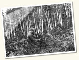

Browse Common Plant Names

- African Violet (1)
- Aiea (Hawaiian Holly) (2)
- Air Plant (4)
- Alder (4)
- Alligator Juniper (6)
- Alpine Golden Wild Buckwheat (1)
- Alpine Springbeauty (1)
- Alumroot (3)
- Amau (Rasp Fern) (1)
- American Basswood (13)
- American Beachgrass (11)
- American Beech (8)
- American Century Plant (4)
- American Chestnut (11)
- American Cow Parsnip (1)
- American Elm (14)
- American Holly (1)
- American Hophornbeam (1)
- American Larch (15)
- American Lotus (7)
- American Searocket (1)
- American Squawroot (3)
- American Sycamore (4)
- American Trout Lily (1)
- American White Waterlily (1)
- American Yew (2)
- Appalachian Filmy Fern (1)
- Apricot (1)
- Arborvitae (38)
- Arizona Madrone (1)
- Arizona Pine (3)
- Arizona White Oak (4)
- Arrowgrass (1)
- Arrowhead (4)
- Arrowleaf Violet (1)
- Arrowroot (1)
- Ash (7)
- Ash Leaf Maple (3)
- Ashy Sunflower (1)
- Aspen Fleabane (1)
- Atlantic White Cedar (1)
- Austrian Pine (1)
- Autumn Dwarf Gentian (1)
- Balsa (1)
- Balsam Fir (27)
- Balsam Poplar (10)
- Banana (1)
- Banana Yucca (3)
- Banyan Tree (2)
- Barberry (1)
- Barrel Cactus (2)
- Basswood (12)
- Bayberry Willow (3)
- Beach Morning Glory (1)
- Beach Pea (1)
- Beach Sheoak (1)
- Beachgrass (21)
- Bearberry Manzanita (5)
- Bearberry Willow (1)
- Beard Lichen (2)
- Beargrass (8)
- Beaver Tail Cactus (1)
- Beech (55)
- Beggarticks (1)
- Bellflower (2)
- Big Bluestem (5)
- Big Cordgrass (4)
- Big Leaf Magnolia (1)
- Big Sagebrush (6)
- Bigberry Manzanita (2)
- Bigelow's Tansyaster (1)
- Birch (12)
- Birdeye Primrose (1)
- Birdfoot Violet (2)
- Bitter Nut Hickory (2)
- Bitteroot (1)
- Bittersweet (1)
- Black Ash (2)
- Black Cherry (4)
- Black Gum (7)
- Black Locust (4)
- Black Oak (20)
- Black Sage (1)
- Black Spruce (7)
- Black Walnut (8)
- Black Willow (10)
- Blackbrush (1)
- Blackeyed Susan (2)
- Blackhaw (1)
- Blackjack Oak (1)
- Bladderwrack (1)
- Bloodroot (1)
- Blowout Grass (1)
- Blue Ash (1)
- Blue Grama (3)
- Blue Spruce (3)
- Bluebell of Scotland (2)
- Bluebells (1)
- Bluebunch Wheatgrass (1)
- Bluestem (6)
- Bog Birch (1)
- Bog Orchard (1)
- Bog Wintergreen (1)
- Bracket Fungi (2)
- Brake Fern (3)
- Brewer Spruce (1)
- Bristle Cone Pine (17)
- Brittlebush (3)
- Broadleaf Arrowhead (1)
- Broadleaf Cattail (1)
- Broomrape (1)
- Brown-spined Prickly Pear (1)
- Buckbean (2)
- Buckeye (2)
- Buckhorn Cholla (1)
- Buckthorn (1)
- Buckwheat (2)
- Buffalograss (2)
- Bugseed (3)
- Bulrush (16)
- Bunchberry Dogwood (3)
- Bunya Pine (2)
- Burbank's Spineless Cactus (1)
- Burr Oak (9)
- Bush Morning Glory (2)
- Buttercup (1)
- Butterfly Milkweed (1)
- Butterwort (1)
- Byfield Fern (3)
- Cabbage Palmetto (4)
- Cactus Apple (1)
- California Barrel Cactus (1)
- California Black Oak (1)
- California Christmas Berry (1)
- California Fan Palm (5)
- California Jointfir (1)
- California Lilac (2)
- California Nutmeg (3)
- California Red Fir (8)
- California Redwood (40)
- Calla Lily (2)
- Canada Lettuce (1)
- Canada Wild Rye (1)
- Canadian Clearweed (1)
- Canadian Serviceberry (1)
- Canadian Waterweed (1)
- Candy Barrel Cactus (15)
- Cane (2)
- Canyon Live Oak (1)
- Carolina Rose (1)
- Carolina Silverbell (3)
- Catawba Rosebay (1)
- Cattail (8)
- Cattle Spinach (6)
- Cedar (6)
- Chamise (1)
- Chamisso Bush Lupine (3)
- Chaparral Yucca (1)
- Chestnut (3)
- Chestnut Oak (1)
- Chicken of the Woods (1)
- Chihuahuan Pine (1)
- Chinkapin Oak (1)
- Chinquapin (1)
- Chokecherry (6)
- Cinquefoil (1)
- Cliff-rose (1)
- Closed Bottle Gentian (1)
- Clubmoss (2)
- Clustered Broomrape (2)
- Coastal Douglas Fir (5)
- Coastal Live Oak (7)
- Coastal Sagebrush (1)
- Cobraplant (1)
- Cockspur Hawthorn (1)
- Coconut Palm (4)
- Coffee (6)
- Coffeetree (1)
- Colorado Blue Columbine (2)
- Common Barberry (1)
- Common Beargrass (1)
- Common Bracken (1)
- Common Burdock (1)
- Common Buttonbush (3)
- Common Hackberry (7)
- Common Hoptree (1)
- Common Juniper (18)
- Common Mare's Tail (1)
- Common Milkweed (1)
- Common Mullein (2)
- Common Pawpaw (4)
- Common Persimmon (6)
- Common Polypody (3)
- Common Silverweed (1)
- Common Sunflower (1)
- Common Water Hyacinth (1)
- Compassplant (4)
- Coontie (2)
- Coralroot (1)
- Cordgrass (4)
- Cork Palm (1)
- Corn (1)
- Cótootaj (2)
- Cotton (1)
- Cottongrass (2)
- Cottonwood (27)
- Coulter Pine (4)
- Coyolito del cerro (1)
- Crabapple (1)
- Creeper (1)
- Creeping Juniper (12)
- Creosote Bush (24)
- Crested Prickly Poppy (1)
- Crimson-eyed Rose Mallow (1)
- Crown of Thorns (1)
- Crowngrass (1)
- Crystalwort (1)
- Cucumber Tree (4)
- Cudweed (1)
- Cultivated Rice (9)
- Cup Lichen (4)
- Cup of Gold (1)
- Cup Plant (1)
- Curl-leaf Mountain Mahogany (1)
- Curly Mesquite (1)
- Curly Mesquite (22)
- Cushion Pink (1)
- Cutleaf Coneflower (1)
- Cypress (15)
- Date Palm (4)
- Deer Fern (1)
- Desert Ironwood (3)
- Desert Thorn (8)
- Devil's Club (2)
- Devil's Tongue (1)
- Digger Pine (5)
- Dock (6)
- Doghobble (1)
- Dogwood (2)
- Douglas Fir (31)
- Douglas Spruce (4)
- Downey-fruited Sedge (1)
- Downy Phlox (1)
- Drummond's Rockcress (1)
- Duckweed (1)
- Dutchman's Breeches (1)
- Dutchman's Pipe (1)
- Dwarf Blueberry (1)
- Dwarf Chinkapin Oak (1)
- Dwarf Cinquefoil (1)
- Dwarf Ginseng (1)
- Dwarf Mistletoe (6)
- Earthstar (1)
- Eastern Bluestar (1)
- Eastern Cottonwood (57)
- Eastern Dwarf Mistletoe (1)
- Eastern Hemlock (22)
- Eastern Hophornbeam (2)
- Eastern Mojave Buckwheat (1)
- Eastern Poison Ivy (1)
- Eastern Red Cedar (18)
- Eastern Red Cedar ? (2)
- Eastern Redbud (2)
- Eastern Swamp Saxifrage (1)
- Eastern White Cedar (18)
- Eastern White Pine (48)
- Edible Fig (1)
- Eelgrass (2)
- Eight Petal Mountain Avens (1)
- Elephant Head Lousewort (1)
- Elm (11)
- Elm Oyster Mushroom (1)
- Emory Oak (7)
- Engelmann Spruce (28)
- Engelmann's Hedgehog Cactus (3)
- English Walnut (3)
- European Alder (1)
- European Larch (3)
- European Privet (1)
- European Red Elder (1)
- Evening Primrose (1)
- Fairy Duster (1)
- False Hellebore (1)
- False Solomon's Seal (1)
- False Willow (1)
- Feather Boa Kelp (2)
- Field Bindweed (1)
- Field Chickweed (1)
- Field Horsetail (1)
- Field Sagewort (2)
- Fig (3)
- Fir (36)
- Fire Cherry (1)
- Fireweed (1)
- Fleabane (3)
- Floating Primrose Willow (1)
- Florida Nutmeg (2)
- Flowering Dogwood (8)
- Flowering Spurge (1)
- Four-needle Pinyon (1)
- Fourpoint Evening Primrose (1)
- Fragrant Sumac (5)
- Fraser Fir (1)
- Fremont Barberry (1)
- French Plantain (1)
- French's Shootingstar (1)
- Freshwater Cordgrass (1)
- Frost Grape (4)
- Gambel Oak (1)
- Garden Balsam (1)
- Garden Nasturtium (1)
- Giant Barrel Cactus (1)
- Giant Sequoia (20)
- Giant Spider Lily (1)
- Giant Waterlily (3)
- Ginger (1)
- Goat's Rue (1)
- Golden False Beardgrass (1)
- Golden Pothos (1)
- Golden Puccoon (1)
- Goldenaster (1)
- Goldenfleece (1)
- Goldenrod (3)
- Goldenseal (1)
- Gowen Cypress (2)
- Grama (26)
- Grand Fir (2)
- Grape (10)
- Gray Oak (1)
- Greasebush (1)
- Greasewood (2)
- Great Lakes Sand Cherry (15)
- Great Ragweed (4)
- Greater Burdock (1)
- Greater Fringed Gentian (2)
- Green Ash (3)
- Greenleaf Manzanita (1)
- Grimmia Dry Rock Moss (3)
- Ground Cedar (1)
- Guayule (14)
- Gum (1)
- Gunnison's Mariposa Lily (1)
- Hackberry (2)
- Hairy Grama (1)
- Hairyfruit Sedge (1)
- Hala (Hawaiian screwpine) (3)
- Harlequin Blueflag (1)
- Hart's Tongue Fern (3)
- Hawthorn (7)
- Hazelnut (2)
- Heartleaf Willow (1)
- Hedgehog Cactus (3)
- Hedwigia Moss (1)
- Hemlock (43)
- Hen and Chickens (1)
- Hick's Yew (1)
- Hickory (8)
- Hoarfrost Gentian (1)
- Holly (1)
- Hollyfern (2)
- Honey Locust (3)
- Hophornbeam (1)
- Horned Bladderwort (1)
- Hornwort (1)
- Huckleberry Oak (2)
- Hupilo (Black-fruited coprosma) (1)
- Iceplant (3)
- Ieie (Climbing Screwpine) (3)
- Incense Cedar (6)
- Indian Pipe (2)
- Interior Live Oak (1)
- Iodinebush (2)
- Jack Pine (32)
- Jacobs Ladder (1)
- Jeffrey Pine (4)
- Jesuit's Bark (1)
- Jointfir (7)
- Jojoba (1)
- Joshua Tree (2)
- Jumping Cholla (20)
- Juniper (45)
- Kaluaha (Menzies' Astelia) (1)
- Kaunaoa (Hawaiian Dodder) (2)
- Kiawe (2)
- Knob Cone Pine (1)
- Knotted Spike Rush (1)
- Koa oha (Dwarf Koa) (1)
- Labrador Tea (2)
- Laceflower (1)
- Lady's Slipper (2)
- Larch (19)
- Large White Trillium (3)
- Latan Palm (1)
- Laurel (1)
- Leather Oak (1)
- Leatherleaf (13)
- Leathery Polypody (1)
- Lesser Round-leaved Orchid (1)
- Lesser Yellow Lady's Slipper (1)
- Lidgate's Brake (1)
- Limber Pine (22)
- Lipfern (1)
- Little Bluestem (5)
- Live Forever (1)
- Live Oak (9)
- Loblolly Pine (8)
- Locoweed (1)
- Locust (2)
- Lodgepole Pine (26)
- Lombardy Poplar (5)
- Long Flower Catclaw (1)
- Longleaf Jointfir (3)
- Longleaf Pine (7)
- Longspur Violet (1)
- Lotus (1)
- Lupine (3)
- Madagascar Dragon Tree (1)
- Maidenhair Fern (2)
- Maidenhair Tree (5)
- Mangrove (13)
- Many Flower Indian Pipe (1)
- Manzanita (11)
- Maple (47)
- Marguerite Daisy (1)
- Marsh Blue Violet (1)
- Marsh Mermaidweed (1)
- Martens Spikemoss (1)
- Mayapple (1)
- Maystar (1)
- Meadow Anemone (1)
- Mescat Wattle (2)
- Mesquite (14)
- Mexican Blue Oak (2)
- Mexican Horncone (2)
- Mexican Pinyon (1)
- Milfoil (1)
- Milkweed (1)
- Missouri Gourd (1)
- Mistassini Primrose (1)
- Mistletoe (6)
- Moa (Whisk Fern) (3)
- Mojave Fish Hook Cactus (1)
- Mojave Yucca (1)
- Monkeypod (1)
- Monterey Cypress (9)
- Monterey Pine (10)
- Mountain Ash (1)
- Mountain Deathcamas (1)
- Mountain Evening Primrose (1)
- Mountain Hemlock (7)
- Mountain Mahogany (2)
- Mountain Maple (1)
- Mountain Stitchwort (2)
- Mouse-ear Chickweed (1)
- Mule's Ears (2)
- Mullein (1)
- Narrowleaf Cottonwood (3)
- Navel Orange (1)
- Needle and Thread (1)
- Netleaf Oak (1)
- New Jersey Tea (1)
- New Mexico Locust (1)
- Nipple Cactus (1)
- Nodding Ladies Tresses (1)
- Nodding Wakerobin (2)
- Norfolk Island Pine (1)
- Northern Bedstraw (1)
- Northern Catalpa (5)
- Northern Green Orchid (1)
- Northern Red Oak (19)
- Northern White Oak (17)
- Oak (85)
- Oakmoss (1)
- Ocotillo (19)
- Oha (Delissea) (1)
- Ohia (5)
- Ohio Buckeye (3)
- One-flowered Broomrape (3)
- One-seed Juniper (5)
- Orange (3)
- Oregon White Oak (4)
- Oriental Arborvitae (1)
- Overcup Oak (1)
- Pacific Bleedinghearts (1)
- Pacific Bog Sedge (1)
- Pacific Mistletoe (1)
- Pacific Poison Oak (1)
- Pacific Silver Fir (1)
- Pacific Willow (1)
- Painted Trillium (1)
- Palmetto (6)
- Palmita (1)
- Paloverde (7)
- Pampas Grass (1)
- Panicgrass (2)
- Papaya (2)
- Paper Birch (25)
- Paper Mulberry (1)
- Parry's Gentian (1)
- Parry's Goldenrod (1)
- Parry's Primrose (1)
- Partridgeberry (1)
- Pawpaw (1)
- Peach Leaf Willow (1)
- Pecan (4)
- Persimmon (1)
- Pheasant Tail Anthurium (1)
- Pickerelweed (2)
- Pickleweed (2)
- Pig's Ear (2)
- Pignut Hickory (3)
- Pin Oak (3)
- Pine (76)
- Pineapple (10)
- Pineland Threeawn (1)
- Pink Lady's Slipper (2)
- Pitch Pine (9)
- Plains Prickly Pear (1)
- Plum (1)
- Poison Sumac (1)
- Pond Cypress (6)
- Pond Weed (1)
- Ponderosa Pine (42)
- Poor Man's Cycad (1)
- Port Orford Cedar (1)
- Post Oak (3)
- Potato (2)
- Poverty Oatgrass (1)
- Prairie Clover (1)
- Prairie Cordgrass (1)
- Prairie June Grass (1)
- Prairie Rosinweed (2)
- Prairie Sandreed (5)
- Prairie Willow (1)
- Prickly Ash (1)
- Prickly Lettuce (3)
- Prickly Pear Cactus (8)
- Prickly Russian Thistle (2)
- Pride of Ohio (1)
- Primrose (1)
- Puffball Mushroom (1)
- Pumpkin Ash (1)
- Punahou Cactus (1)
- Purple Chokeberry (1)
- Purple Cliffbrake (2)
- Pussytoes (2)
- Pygmy Goldenweed (1)
- Pygmyweed (1)
- Quaking Aspen (22)
- Quillwort (3)
- Rabbitbrush (1)
- Ragweed (1)
- Rainbow Vine (1)
- Rare Clubmoss (2)
- Rattlesnake Fern (2)
- Rattlesnake Plantain (1)
- Red Alder (1)
- Red Hawthorn (1)
- Red Maple (6)
- Red Mulberry (4)
- Red Pine (40)
- Red Spruce (1)
- Redbud (1)
- Redosier Dogwood (5)
- Redwood Sorrel (1)
- Reedgrass (1)
- Reindeer Lichen (1)
- Rock Elm (3)
- Rock Tripe (1)
- Rocky Mountain Bee Plant (1)
- Rocky Mountain Blue Columbine (1)
- Rocky Mountain Juniper (5)
- Rocky Mountain Pond Lily (2)
- Rose (1)
- Rose Mallow (1)
- Rose of Plymouth (1)
- Rosinweed (2)
- Royal Palm (3)
- Running Clubmoss (2)
- Running Serviceberry (2)
- Rush (1)
- Rush Skeleton Plant (1)
- Russian Thistle (1)
- Sagebrush (20)
- Sago Palm (3)
- Saguaro (60)
- Salix (1)
- Saltbush (1)
- Saltmarsh Rush (1)
- Saltwater Cordgrass (3)
- Sand Dune Thistle (1)
- Sand Sagebrush (1)
- Sandhill Muhly (2)
- Sandreed (1)
- Sandwort (1)
- Saw Palmetto (4)
- Scaly Tree Fern (1)
- Scarlet Oak (6)
- Schneck Oak (1)
- Scouringrush Horsetail (1)
- Screwpine (1)
- Sea Island Cotton (1)
- Sea Oats (1)
- Sea Palm (6)
- Searocket (1)
- Sedge (20)
- Sedge Leaf Buckbrush (1)
- Serviceberry (1)
- Sevenangle Pipewort (2)
- Shadscale Saltbush (3)
- Shagbark Hickory (4)
- Sharp-lobed Hepatica (5)
- Shellbark Hickory (2)
- Sheoak (1)
- Shepherd's Purse (1)
- Shield Lichen (1)
- Shingle Oak (2)
- Shining Clubmoss (1)
- Shore Horsetail (1)
- Shoreline Rush (3)
- Short Leaf Pine (9)
- Shortray Fleabane (1)
- Showy Orchid (1)
- Shrubby Cinquefoil (1)
- Shumard's Oak (1)
- Sickletop Lousewort (1)
- Sierra Chinquapin (2)
- Silky Prairie Clover (1)
- Silver Maple (4)
- Silverleaf Oak (1)
- Single-leaf Pinyon (3)
- Sisal Hemp (1)
- Sitka Spruce (13)
- Skunk Cabbage (2)
- Slash Pine (1)
- Slippery Elm (1)
- Small Fruit Prickly Pear Cactus (1)
- Smooth Solomon's Seal (1)
- Smotherweed (1)
- Snowball (2)
- Soaptree Yucca (1)
- Soapweed Yucca (5)
- Softstem Bulrush (3)
- Sotol (1)
- Southern Adderstongue (1)
- Southern Bald Cypress (14)
- Spanish Moss (4)
- Speckled Alder (1)
- Sphagnum Moss (3)
- Spike Rush (4)
- Spikemoss (3)
- Spiny Spikemoss (2)
- Spreading Dogbane (1)
- Spruce (42)
- Spurge Laurel (1)
- Squawbush (2)
- Squirrel Corn (1)
- St. John's Wort (3)
- Staghorn Cholla (4)
- Staghorn Fern (1)
- Staghorn Sumac (5)
- Starry False Solomon's Seal (1)
- Stiff Clubmoss (1)
- Stonecrop (1)
- Stoneseed (1)
- Striped Maple (3)
- Subalpine Fir (14)
- Sugar Maple (19)
- Sugar Pine (13)
- Sugarcane (58)
- Sumac (9)
- Summer Coralroot (1)
- Sundial Lupine (2)
- Sunflower (1)
- Swamp Rose (1)
- Swamp White Oak (4)
- Sweet Birch (3)
- Sweet Clover (1)
- Sweet Crabapple (1)
- Sweet Fern (3)
- Sweet Gum (5)
- Sword Fern (2)
- Sycamore (6)
- Table Mountain Pine (3)
- Taro (3)
- Teddybear Cholla (4)
- Teocinte (1)
- Texas Red Oak (1)
- Thimbleberry (1)
- Thistle (1)
- Threadleaf Sedge (1)
- Thuja (1)
- Tolmie's Saxifrage (1)
- Torrey Pine (8)
- Tree Cholla (4)
- Tree Fern (5)
- Tree of Heaven (2)
- Triangle Burr Ragweed (5)
- True Bulrush (1)
- Tuberous Grasspink (2)
- Tufted Evening Primrose (1)
- Tulip Prickly Pear (1)
- Tuliptree (19)
- Tupelo (2)
- Turkey Oak (4)
- Tussock Cottongrass (1)
- Twinflower (2)
- Two-needle Pinyon (30)
- Uluhe (False Staghorn) (1)
- Umbrella Liverwort (3)
- Uptight Sedge (1)
- Urze-das-vassouras (1)
- Utah Juniper (7)
- Valley Oak (1)
- Velvet Mesquite (29)
- Venus Flytrap (3)
- Virginia Blueflag (1)
- Virginia Chain Fern (1)
- Virginia Creeper (3)
- Virginia Springbeauty (2)
- Walking Fern (1)
- Walnut (1)
- Water Arum (2)
- Water Tupelo (1)
- Waterlily (16)
- Waterwillow (5)
- Wattle (7)
- West Indian Mahogany (1)
- Western Arborvitae (4)
- Western Blue Virgin's Bower (1)
- Western Hemlock (5)
- Western Juniper (2)
- Western Oak Fern (1)
- Western Pasqueflower (1)
- Western Sea Purslane (1)
- Western Snowberry (1)
- Western Swordfern (1)
- Western Wheatgrass (3)
- Western White Pine (12)
- Western Yellow Pine (4)
- Wheatgrass (1)
- Whipple Cholla (1)
- White Ash (4)
- White Baneberry (2)
- White Bark Pine (4)
- White Beardtongue (1)
- White Birch (1)
- White Colicroot (1)
- White Cushion Moss (1)
- White Fir (8)
- White Marsh Marigold (2)
- White Prairie Clover (1)
- White Sassafras (7)
- White Spruce (5)
- White Walnut (4)
- White Water Crowfoot (1)
- White Willow (3)
- Whitehair Rosette Grass (1)
- Wiggin's Cholla (2)
- Wild Blue Phlox (1)
- Wild Buckwheat (3)
- Wild Cucumber (1)
- Wild Lemonweed (1)
- Wild Pineapple (2)
- Willow (37)
- Willowherb (3)
- Willows (1)
- Wood Sorrel (1)
- Woodland Pinedrops (2)
- Woolly Beachheather (7)
- Wright's Cliffbrake (1)
- Yellow Avalanche Lily (2)
- Yellow Birch (15)
- Yellow Bush Lupine (1)
- Yellow Marsh Marigold (3)
- Yellow Mountain Avens (2)
- Yellow Paloverde (20)
- Yellow Pond Lily (2)
- Yew (8)
- Zamia (1)